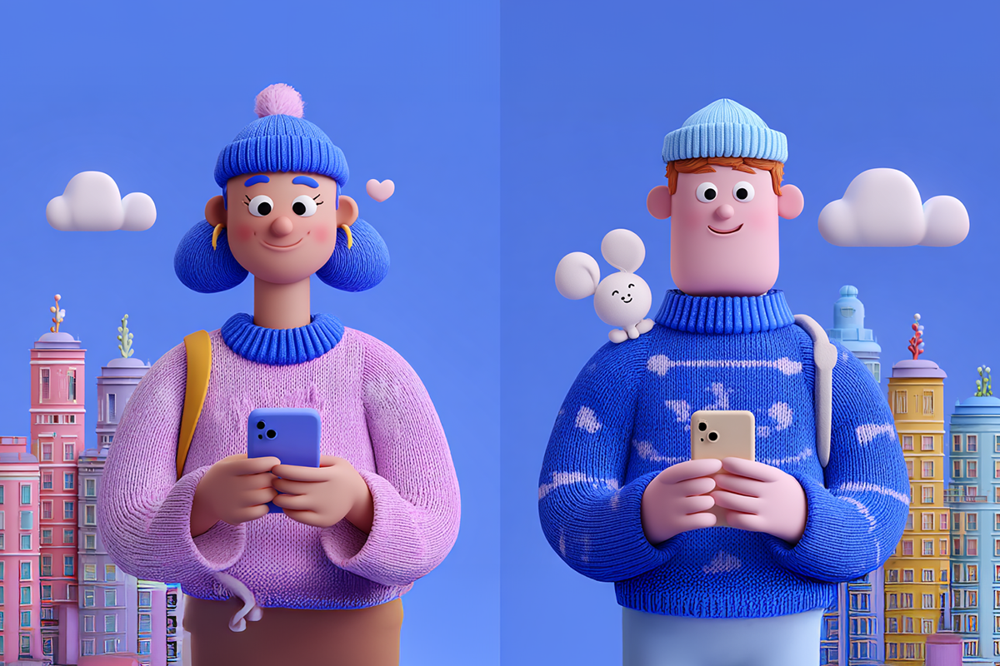
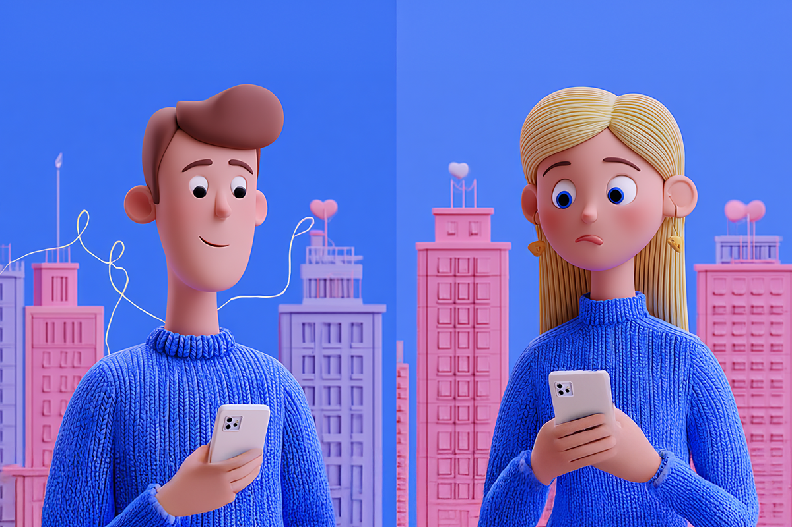

Tu nueva pareja podría ser con IA
El mundo de las citas está pronto a transformarse.
El mundo de las citas está pronto a transformarse.

Parece ser que la inteligencia artificial está dominando todo en nuestras vidas. Es tan simple como escuchar música en Spotify y ver cómo mágicamente el algoritmo te va sugiriendo artistas nuevos que te gustan. O cómo usar TikTok y misteriosamente obsesionarte con cierto tema que el feed no deja de mostrarte. Casi todos nuestros gustos y aficiones últimamente están siendo influidos por la IA.
Parece que esto va a llegar más lejos, porque la inteligencia artificial ya llegó al mundo del amor y las aplicaciones de citas. Te lo dijimos acá primero: no te sorprendas si tu próximo match exitoso llega a ser potenciado por esta tecnología.
La ciencia de encontrar pareja siempre ha existido. En el pasado, las familias hacían matchs o contrataban casamenteras, no por nada en la India se continúa haciendo con bastante éxito. En la última década, le hemos hecho un espacio a las aplicaciones de citas, esas que en base a tus gustos y preferencias te permiten conectar con personas afines. Las clásicas Tinder y Bumble, Hinge en países más europeos, o incluso Raya para personas famosas, a la que solo se puede acceder con invitación.
Funcionan haciendo matches basándose en dos personas que se ponen like. La mayoría de estas aplicaciones son gratis, pero te ofrecen planes pagados por mayores beneficios, como likes ilimitados y más. Lo curioso es que, a medida que la tecnología ha ido avanzando y la IA ha conquistado las apps, menos son las personas dispuestas a pagar por esto. En el último año, Bumble ha perdido más de un 9% de sus suscriptores pagados y con eso sus ingresos han ido decayendo, porque las suscripciones representan el 97% de estos últimos.
De alguna forma, con nuevas páginas como Keeper u otros matchmakers potenciados con IA y mucho más personalizados, nos estamos moviendo de vuelta a los primeros días de las páginas web de citas en los años noventa, cuando los sitios te hacían 80 preguntas sobre ti y con eso creaban un perfil para tener coincidencias con otras personas.

Obviamente, esto es una mala noticia para las aplicaciones de citas, que ya han tratado de ponerse al día. Grindr, una app para hombres gay, ya sacó varias funcionalidades, incluido un “wingman” o amigo con IA, que te da consejos sobre las conversaciones que estás teniendo. Hinge, por su lado, sacó una función que te entrega retroalimentación sobre tu perfil y sus fotos.
La cosa no queda ahí. Muchas otras aplicaciones de citas están internamente testeando funcionalidades de IA, como expertos en conversaciones para prepararte para citas, o incluso poder describir a tu match ideal con características físicas para que la app pueda encontrar alguien parecido.
Todo esto puede sonar muy loco, pero al final del día es la época en la que estamos viviendo. Y es lógico que el tema genere divisiones: hay gente que la acomoda y quiere sacarle provecho, y gente que solo quiere volver a las conexiones humanas y a conocerse en un bar. Más allá de preguntarse si es bueno o malo, quizás vale la pena mirarlo con más perspectiva: si antes estabas destinado a casarte con tu vecino de toda la vida, hoy las posibilidades son muchísimo más amplias.

Lo que sí es seguro, es que por mucho que la IA pueda encontrarte una potencial pareja compatible, nada nunca va a reemplazar la interacción humana. Como dicen en inglés, algunas cosas se ven lindas en papel o “good on paper” pero no necesariamente hay conexión al conocerse por primera vez.
Y tú, ¿qué piensas? ¿Estás dispuesto a encontrar tu nueva pareja con IA?
 Tecnología
TecnologíaSi eres como yo y revisas TikTok e Instagram constantemente, te habrás dado cuenta de que estas redes son casi como un experimento social.
 Tecnología
TecnologíaHablamos mucho de inteligencia artificial. La tenemos integrada en nuestra vida, nos ayuda en nuestros trabajos y le preguntamos cosas de…
 Tecnología
TecnologíaDurante años hemos pensado en la inteligencia artificial como algo súper frío: servidores gigantes, computadores procesando datos y…